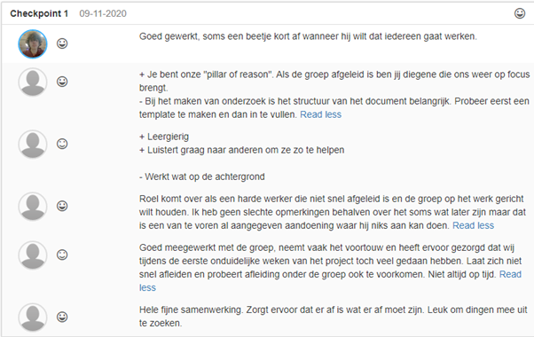
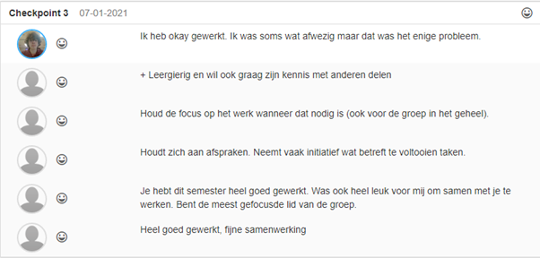

Onze groep heeft peer reviews van elkaar gemaakt tijdens sprint 1, 2 en 3. Ik zal deze peer reviews een voor een laten zien en dan beschrijven wat ik heb veranderd en wat ik heb blijven doen. Doordat de reviews anoniem zijn weet ik niet wie wat heeft geschreven.
Tijdens de peer review van sprint 1 zijn er een paar puntjes naar boven gekomen wat ik moest gaan verbeteren. Deze punten waren als volgt:
1. Ik vergeet soms het maken van een template voor een document. Hierdoor was ik vaak wat extra tijd kwijt.
2. Ik werkte soms een beetje op de achtergrond. Ik gaf wat minder snel mijn mening.
Punten die ik aan zou moeten houden volgens de peer review:
1. Mensen goed op focus houden.
2. Proberen iets minder te laat te komen(dit is echter moeilijk in verband met een fysieke aandoening)
Deze sprint heeft me laten zien wat ik zou moeten gaan verbeteren.
Tijdens sprint 2 is het me gelukt om een van de verbeterpunten te halen. Namelijk het maken van templates voor documenten. Dit heeft ook gedeeltelijk te maken dat het kwam doordat Stephan Vrijsen begon met het bespreken over hoe je moest documenteren.
De volgende punten konden echter nog verbeterd worden:
1. Nog steeds soms wat stil soms.
2. Ben nog steeds soms wat te laat
Tijdens sprint 3 is het me gelukt om meer op tijd te komen. Dit heeft meer te maken dat er meer thuis werd gewerkt. Afgezien hiervan vond ik van mezelf dat ik iets afweziger was dan normaal. Ik denk persoonlijk dat het te maken had met de chronische vermoeidheid. Hiernaast vind de rest van mijn groep dat ik goed heb gewerkt.
